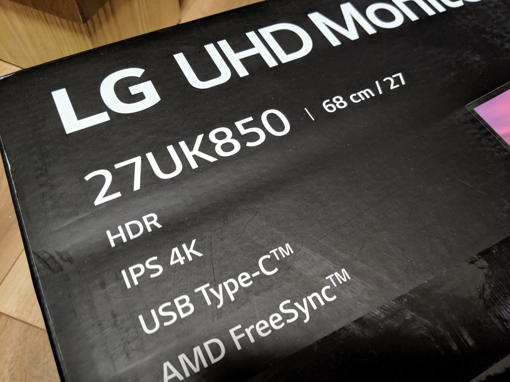
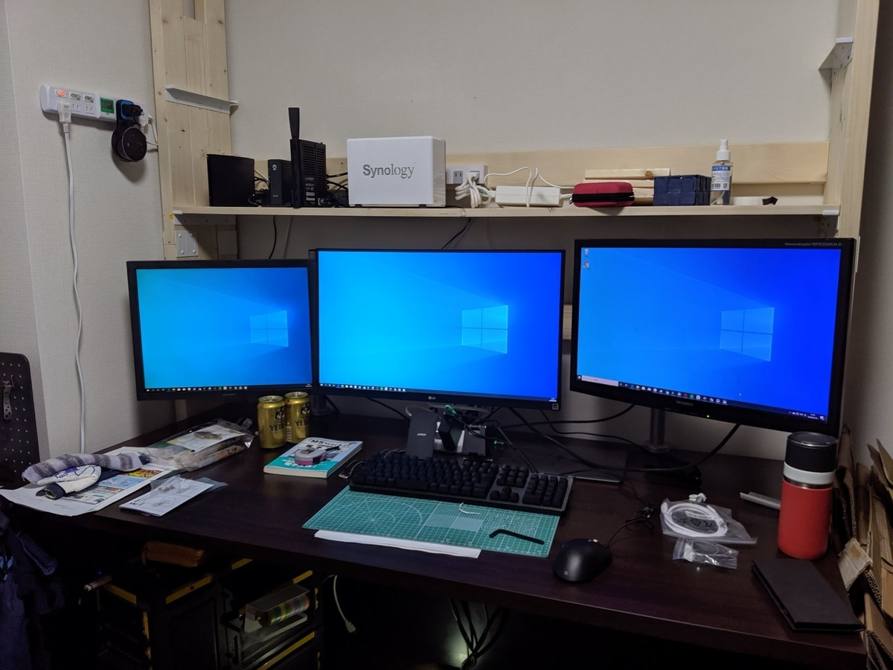
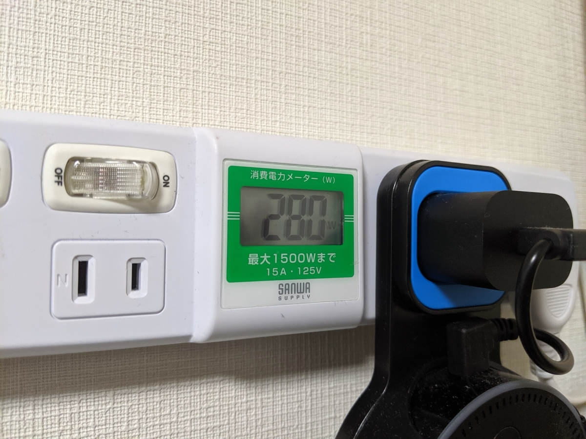

Amazon Prime Day で HDR/USB-C なモニターを確保した（なお、モニターの購入は約8年ぶりの模様
公開日：

Amazon Prime Day で HDR/USB-C なモニターを確保した。ずっとほしかったので、値段を監視していたのだ！

- 出版社/メーカー: LG
- 発売日: 2018/02/14
- メディア: Personal Computers
- この商品を含むブログを見る
参考価格 88,800 円のところを、56,488 円（約2/3）で買えたので満足。もっとも、このモニターは型落ちで（最新版は HDR10 → HDR400）、たいてい7万円弱で買える。実際、今見てみたところ 74,980円＋10,000引きクーポンで売ってた。

おかげさまで、古いデスクトップで作業するときもトリプルモニターが使えるようになった。いい機会だし、うちの子たちを改めて紹介しよう。
- 左：シャープ LL-T2015（20.1インチ） 2003年製
- 中：LG 27UK850-W（27インチ）2018年製
- 右：三菱 RDT233WLM（23インチ） 2011年製
RDT233WLM を買ったのは 2012年6月9日 らしいので（Amazon の購入履歴を調べた）、約8年ぶりのモニター購入ということになる。まだ小岩に住んでいたころだな……LL-T2015 に至っては15年ぐらい、たぶん大学辞める時ぐらいから使っているはず。意外に自分は物持ちがよいようだ。
見た目の本体は薄いのに、アダプタがデカいの、詐欺だよな pic.twitter.com/e07Ry9Uw8C
— ふつうのだるやなぎ (@daruyanagi) July 16, 2019
AC アダプターがやたらデカいかったのを除けば、だいたい想像していた通りのデキで、とくに不満はない。あぁ、そういえば、音（HDMI 出力）はなかなかよかったかな……RDT233WLM と比べての話だからそれなりだけど、Age of Empire:DE を遊んだとき、今まではボタンを押すとボンッと鳴るだけだったのが、余韻と深みのあるドゥムッっという音になっていて……「あ、ほんとはこういう音だったんだな！」って実感した。あと、重箱の隅をつつくようなツッコミになるが、ベゼルが狭すぎて Mouse の Windows Hello カメラが安定しない。まぁ、さすがにこれはイチャモンレベルだが……ベゼルレスは基本的に快適だ。消費電力は 80W ぐらい。うちの PC は以前からある2枚のモニターを含めて 200W ぐらい使っていたのが、280W に跳ね上がった。電気代への影響はちょっと気になるけど……新居は一括受電でちょっと電気代が安くなってるから、まぁ、差し引きゼロぐらいだろう。

ちなみに、うちはすぐモニターアームをつなげたので、スタンドの使い勝手はわからない。Amazon の商品説明だけだとわかりにくいけど、さすが今どきのモニターだけあって、ちゃんと VESA には対応している。
めっちゃあったで pic.twitter.com/SFKNx4HMTo
— ふつうのだるやなぎ (@daruyanagi) July 16, 2019
Windows 10 の HDR は使えなかったし（ビデオカード側がしょぼいからかなぁ）、USB-C もまだ試していないんだが（ぉぃ！）、おおむね満足してる。USB-C を省けばもう1万円ぐらいは余裕で安くなったけど、将来性を考えれば付いていた方が絶対いいはずだ。